Lesson overviews, restructured · before and after
2026-10-26. The 06 and 07 overviews at 1440 and 390: the first screen of each, and the whole page at 1440 (half size). Page height at 1440: 07 from 9,598 px to 6,694; 06 from 6,937 to 5,157 (before the first restructure, 07 was 35,006).
Lesson 07 overview
Rebuilt around what a reader needs in two minutes. Visible: the header with a short summary, four numbers, the kit live, the screens (the Wireframe / Design switch), where each change goes in (with "11 checks stop the build" folded under it), seven key decisions (the full register of 42 folded), the seven photos with their races, and what's open. Folded under "More": the findings by disposition, the inventory, DESIGN.md with the HIG table, the record as links into concept.md, the review pages. Removed: the stage narratives, the separate sources-of-truth table, the shell panel.
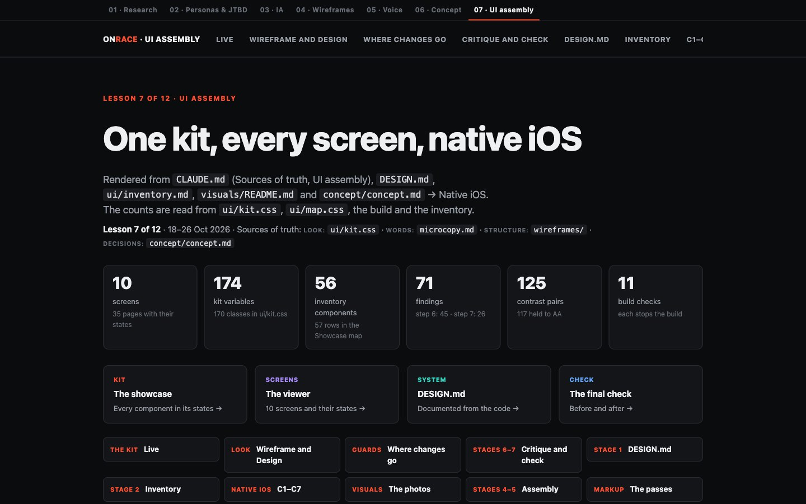
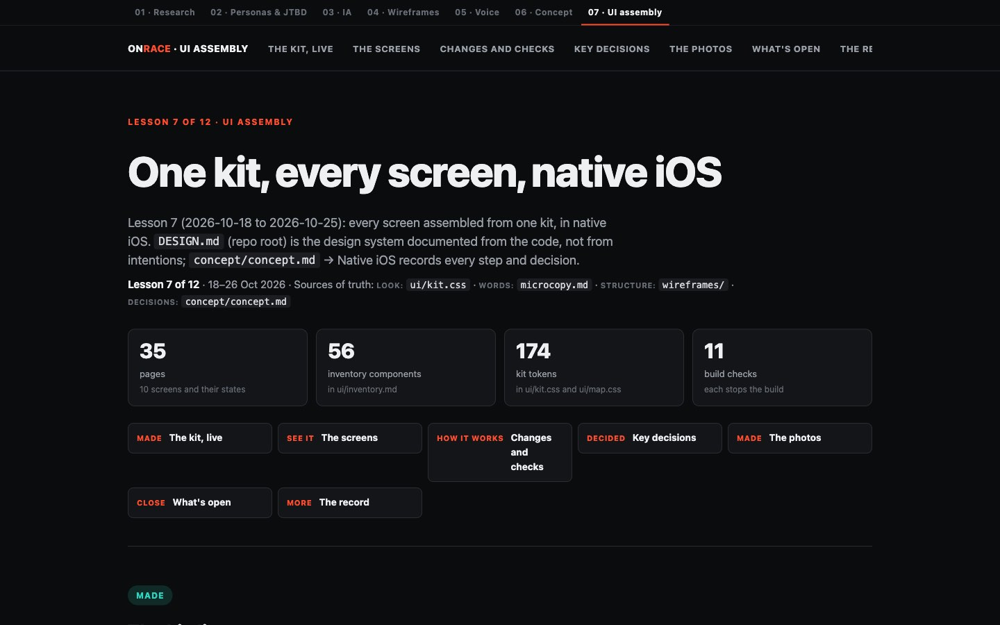
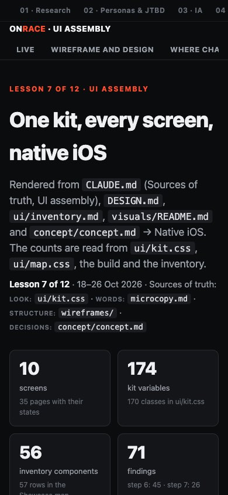
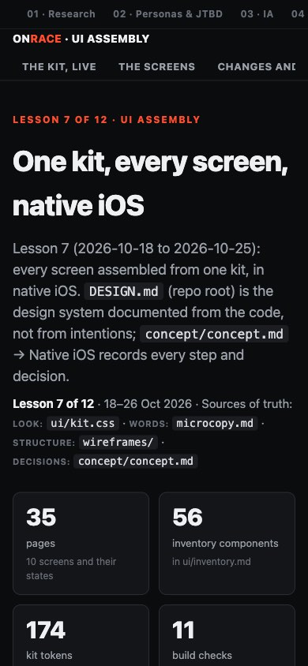
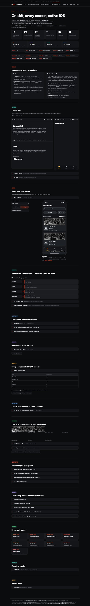
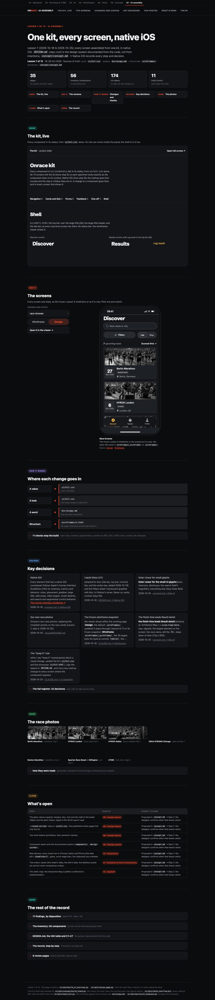
Lesson 06 overview
Visible: the header with a short summary, four numbers, the stand live, the chosen direction with the two phone frames, and seven key decisions. Everything else is folded under "More": the full register, references, taste, both direction rounds, the stand in numbers and the color rules, the screens in detail, the step 7 check, and the open items.
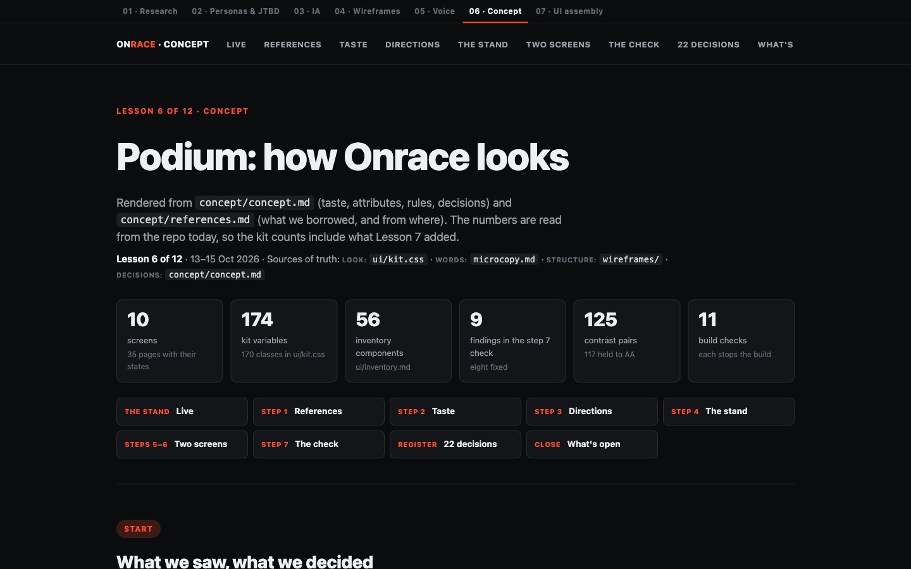
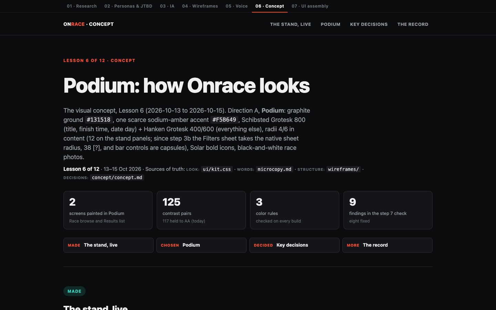
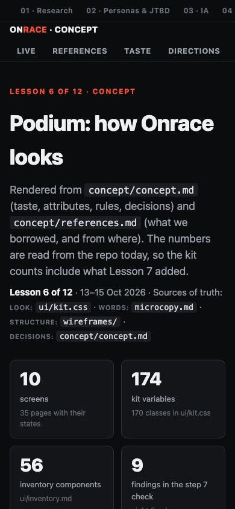
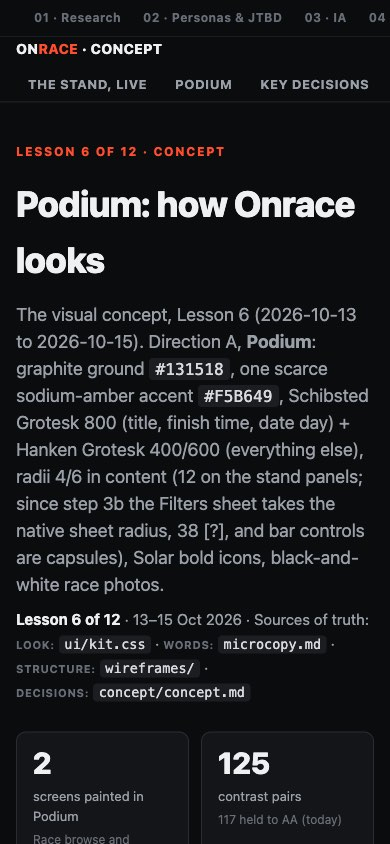
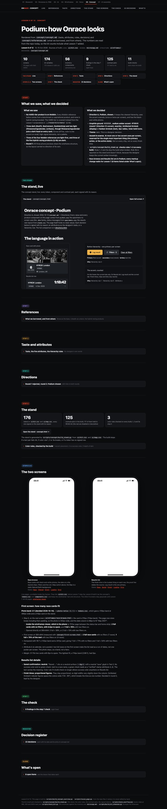
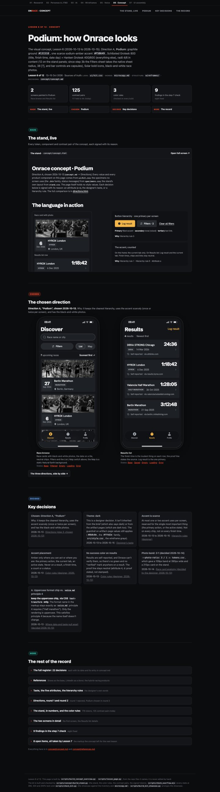